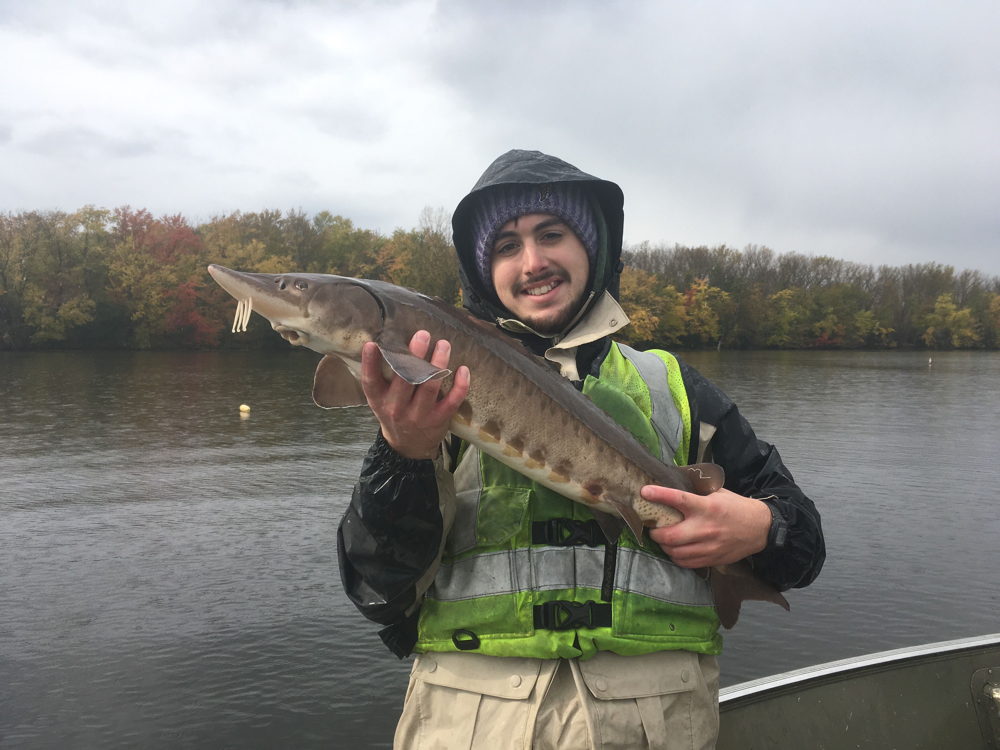

Jacob E. Wojcik
Field Technician
jwojci01@gmail.com
(315) 436-8670
Syracuse, NY, 13219
Summary
2+ years of experience working as an environmental technician for non-profit and
university organizations. My contributions have included quality field work,
attentive data analysis, and diligent report writing.
Work Experience
- Assist project scientists with field work for organization projects
- Enter and manage data, and assist with data analysis
- Maintain field equipment
- Write and edit technical reports for project results
- Provide expertise at education outreach events
- Lead and or coordinate combined sewer overflow sampling events at influent and effluent locations
- Sample groundwater elevations
- Write up quarterly reports for project results
- Deployed and checked trap nets, gill nets, and sturgeon nets
- Seined shorelines utilizing a box seine
- Conducted sunfish nest and capture-mark-recapture surveys
- Prepared, cut, and analyzed otolith and scale samples
- Assisted with data entry
- Used radio telemetry to track and monitor Cottontail day resting locations
- Conducted vegetation surveys on Cottontail habitat
- Trapped and processed Cottontails
- Analyzed and annotated camera trap data
- Assisted with data entry
Education
- Graduation: December 2018
Certifications
- General Boating Safety
Software
- RStudio
- Microsoft Office
- HOBOware
Laboratory Skills
- Data Analysis
- Microscope Work
Field Techniques
- Carrying and using heavy equipment in variable weather conditions and terrain
- Collection and identification of macroinvertebrates and fish
- Utilization of YSI multi-probe data sondes
- Boating
Field Equipment
- YSI multi-probe data sondes
- Electrofishing back-packs (Smith-Root/Halltech)
- HOBO water temperature loggers
- Trap nets, gill nets, sturgeon nets, box seines